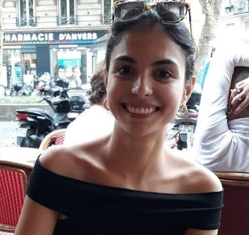

Sobre mim
Olá! Meu nome é Clarice Passos, tenho 33 anos e moro
em Porto Alegre com meu namorado e duas cadelas.
Fiz esse site para divulgar meu trabalho como dev e buscar novas oportunidades
profissionais. No momento,
estou estudando para me tornar uma desenvolvedora full stack. Sou jornalista de formação e trabalhei
até o momento na área. No meu tempo livre, gosto de ver filmes, séries e ler.
Informações
- Telefone: (51)992780681
- E-mail: claricepassos@gmail.com
Formação
- Desenvolvimento Full-Stack, 2021-,Labenu
- Pós-graduação em televisão e convergência digital, 2016-2017, Unisinos
- Bacharel em Jornalismo, UFRGS, 2007-2012
Experiência profissional
- Assessoria de imprensa e gestão de midias sociais na emissora de televisão TVE-RS, 2014-
- Assessoria de imprensa, gestão de midias sociais e auxiliar administrativa, Solar Coruja, 2013-2014
- Gerente de midis sociais, Noize Fuzz, 2012-2013
Habilidades
- Fluência em inglês
- Bom relacionamento interpessoal
- Facilidade de aprendizado